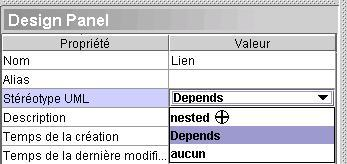

Package Diagram

The Package diagram describes the
static structure of a software system at a higher level than the Class Model. Package diagrams in
Open ModelSphere enable the modeling of this abstraction, as well
as visualization of dependencies and overall structure of the system.
The following concepts can be used
to build your Package
diagrams with Open ModelSphere:
- Package

- Dependency

To
add a Package
- Select the Package creation
tool
located in
the JAVA Class modeling
toolbar.
- With the Package tool
selected, click anywhere inside the diagram window.
To
add a Dependency
- Select the Dependency creation
tool
located in the JAVA Class modeling
toolbar.
- With the Dependency tool
selected, click anywhere inside the diagram window.
Assign a
UML
sterotype to an object
- Select any object from the diagram or
from the explorer.
- In the design
pannel,
choose from the list UML Sterotype.

Assign a
UML constraint to an object
- From the explorer or from the diagram
right-click an object and
click the properties tool

- Select the UML Constraint tab,
click the Link button.
- Select a UML Constraint from
the pop-up window.
The common
concepts such as Semantic
Links and Graphical
Notes can also be used to
enrich your Package diagrams.